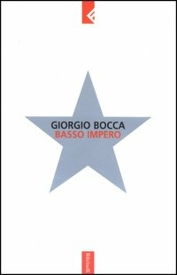

8:33 · 1 OPERA
In nome di un virus.
Il filo del discorso
Il relatore critica le restrizioni e la comunicazione del periodo pandemico, mettendo al centro paura, libertà e capacità di risposta collettiva. La riflessione passa poi alla lettura di brani di Basso impero di Giorgio Bocca: il rapporto fra comunicazione, informazione e propaganda diventa una chiave per interrogare l’uniformità dei messaggi. Il finale propone la lettura come occasione per recuperare autonomia di giudizio.
I libri nel discorso

Basso impero
Note sul riferimento
Copertina: Feltrinelli · Basso impero · edizione di riferimento
Immagine associata all’ISBN di riferimento e controllata visivamente; edizione e traduzione non identificate come quelle citate o lette nel video.
Titolo, autore e anno annunciati prima della lettura di estratti sulla comunicazione.